Kaapse Klopse
Malaysia +1 · Street and playground games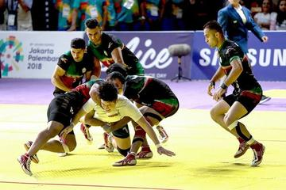
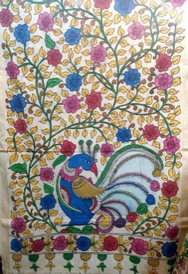
Kalamkari pen painting
Worldwide · Crafts and makingKale
Gabon · Board and table games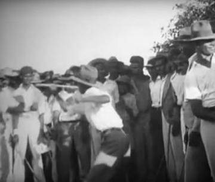
Kalinda Stick Duel
Trinidad and Tobago · Wrestling and martial sports
Kalocsa floral painting
Hungary · Crafts and making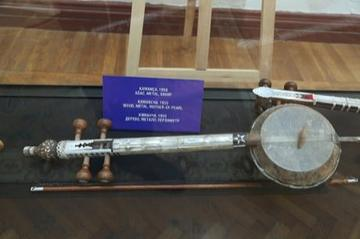
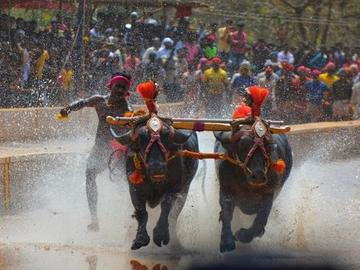
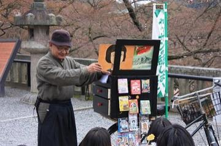
Kampong Ayer water-taxi dash
Brunei +1 · Water and winter sports
Kanga cloth design
Kenya · Crafts and making
Kanklės
Lithuania · Musical instruments
Kantele
Finland · Musical instruments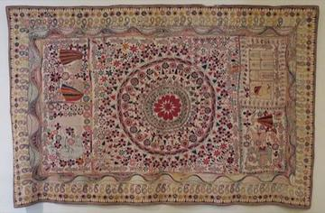
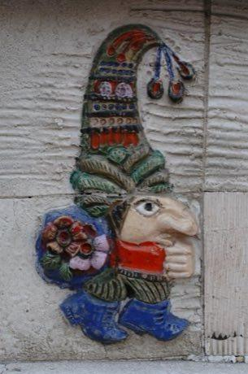
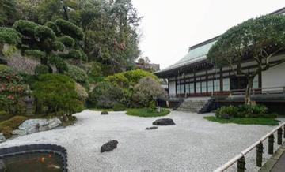
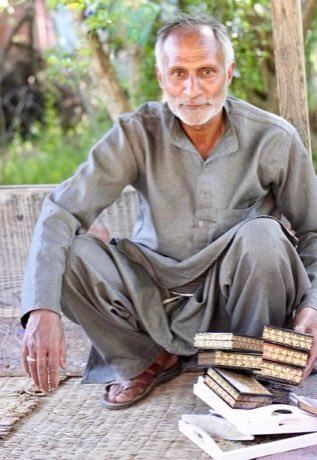
Kashmiri papier-mache painting
India · Crafts and makingKasivaki
Tonga · Street and playground gamesKastom games
Vanuatu · Street and playground games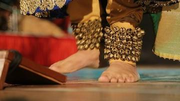
Kathak tatkar footwork rhythm
India +1 · Other traditions
Kathputli string puppets
India · Performance and storytellingPlay preview · in the Story & Theatre of the World app
Kati
Kenya +1 · Street and playground games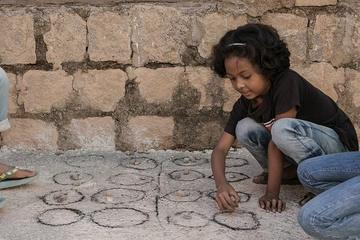
Katro / Katra
Madagascar · Board and table games
Keffiyeh Pattern Loom
Palestine · Crafts and making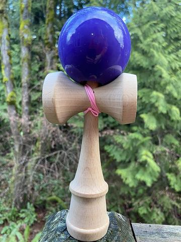

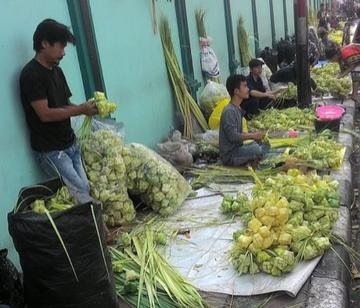
Ketupat
Malaysia +2 · Crafts and making
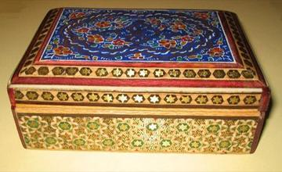
Khatam inlay star pattern workshop
Iran · Crafts and making
Khayamiya Tentmaker Applique
Egypt · Crafts and making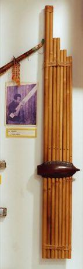
Khene
Laos · Musical instruments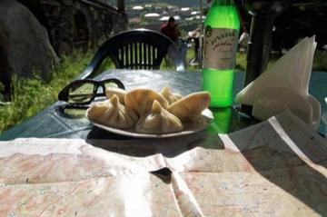
Khinkali dumpling pleating
Georgia · Crafts and making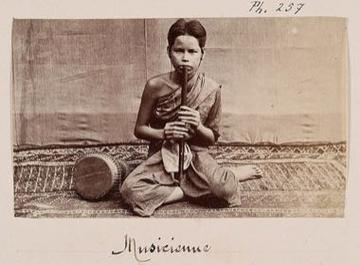
Khloy bamboo duct flute
Cambodia · Musical instrumentsKhmer chess
Cambodia · Board and table games

Khokhloma Pattern Painting
Russia · Crafts and makingPlay preview · in the Paper & Paint of the World app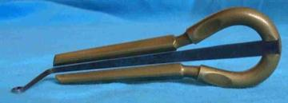
Khomus
Russia · Musical instrumentsKhuru
Bhutan · Dexterity and skill games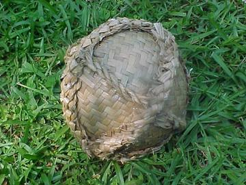
Kī-o-rahi
New Zealand · Street and playground gamesKibao
Tanzania · Street and playground games
Kiela
Angola · Board and table games
Kiiking
Estonia · Puzzles and mind gamesKikouri
Cote d'Ivoire · Board and table games
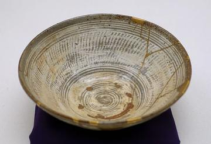

Kiondo basket weaving
Kenya · Crafts and making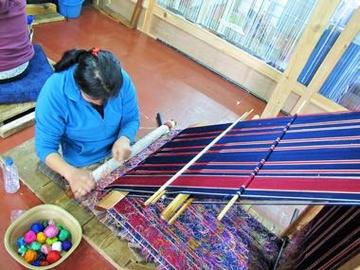
Kira and Kushuthara backstrap weaving
Bhutan · Crafts and making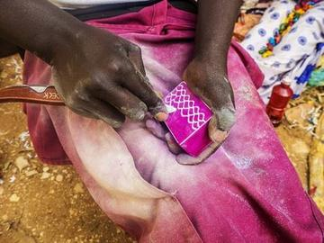
Kisii soapstone carving
Worldwide · Crafts and makingPlay preview · in the Craft Designs of the World app
Kisolo
DR Congo +1 · Board and table games
Kissi Penny Forging
Guinea +2 · Crafts and making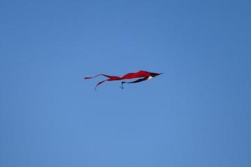
Kite flying
Honduras · Dexterity and skill games
Kitendawili
Kenya · Puzzles and mind games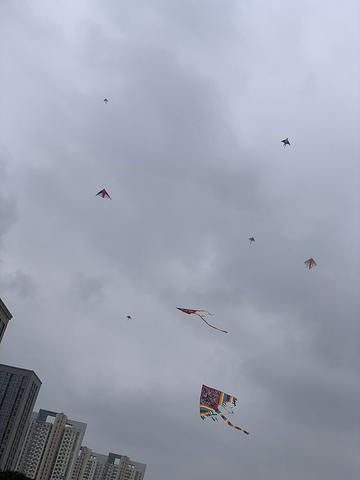
Kites
Barbados +1 · Dexterity and skill games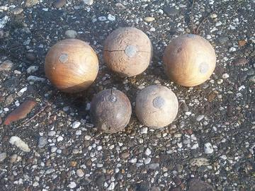
Klootschieten
Netherlands · Street and playground games
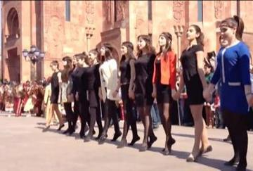
Kochari
Armenia · DancesKoi
Botswana · Street and playground games

Kokawa Hausa Wrestling
Nigeria +1 · Wrestling and martial sports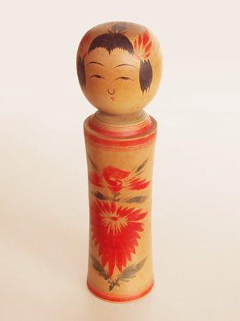
Kokeshi doll painting
Japan · Crafts and making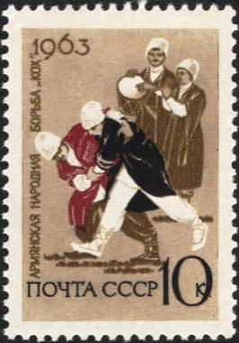
Kokh
Armenia · Wrestling and martial sportsKokpar
Kazakhstan · Street and playground games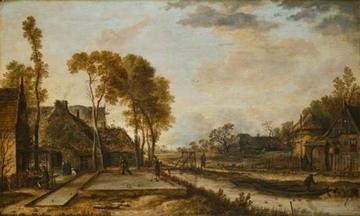

Komuz
Kyrgyzstan · Musical instruments
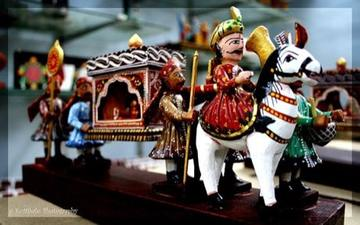
Kondapalli village toys
Worldwide · Crafts and making
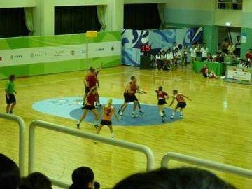
Korfball
Netherlands +2 · Team ball sports
Korhogo Painted Cloth Studio
Cote d'Ivoire · Crafts and making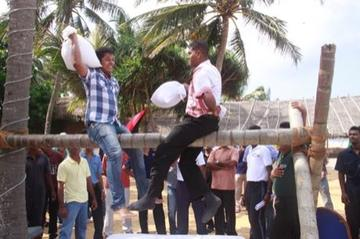
Kotta Pora
Sri Lanka · Wrestling and martial sportsPlay preview · in the Sports & Skill of the World app
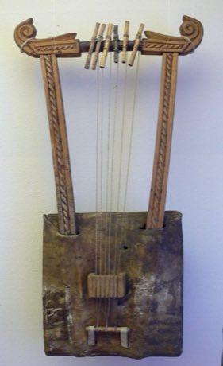
Kriol traditional games
Belize · Street and playground games
Krobo Powder-Glass Beads
Ghana · Crafts and making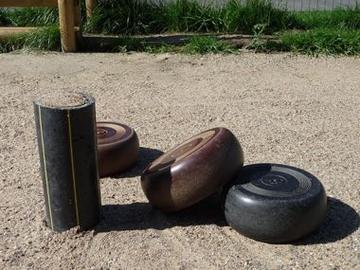
Krulbol
Belgium +1 · Dexterity and skill games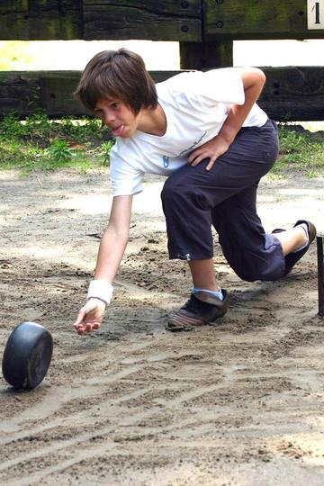
Krulbollen
Belgium · Street and playground gamesKrur
Morocco · Board and table games
Kuba cloth pattern puzzle
DR Congo · Crafts and makingPlay preview · in the Paper & Paint of the World app
Kuli
Congo · Street and playground games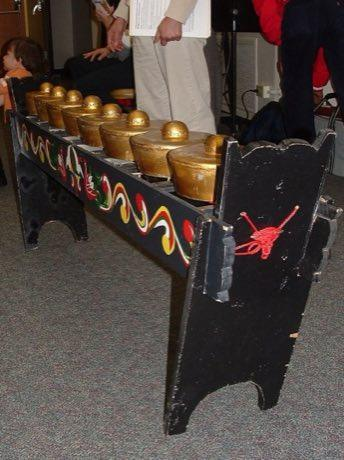
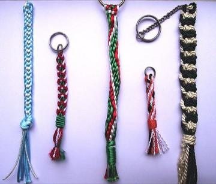
Kumihimo Braid Disk
Japan · Crafts and making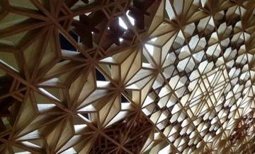

Kurai
Russia · Musical instruments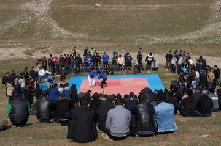

Kurpie Layered Paper Cutting
Poland · Crafts and making
Kushti / Pehlwani mud wrestling
India +1 · Wrestling and martial sportsPlay preview · in the Sports & Skill of the World app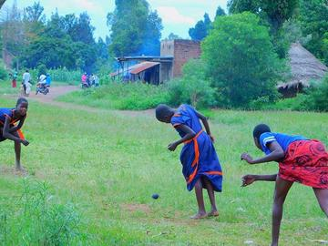
Kwepena
Uganda · Street and playground games
Kyykka
Finland · Street and playground games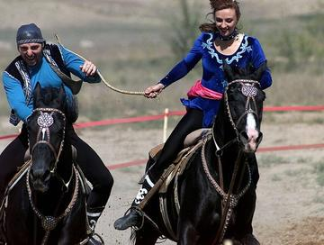
Kyz Kuu
Kazakhstan · Street and playground games